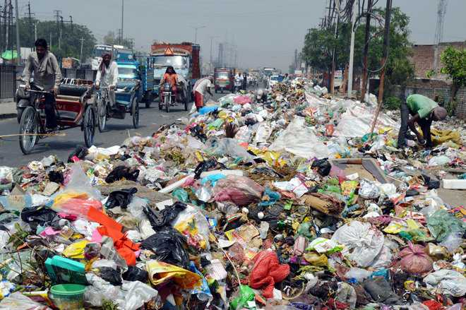

what is civic sense
Civic sense is nothing but the simple awareness of how our actions affect others in society. It includes respecting public spaces, following rules, caring for the environment, and behaving responsibly in day-to-day life.
Unfortunately, in India, civic sense is often overlooked. We excel in talent, culture, and innovation, yet when it comes to basic manners in public life, we tend to lag behind. The problem is not of intelligence, but of attitude and awareness. A strong civic sense is the foundation of a developed society — and India cannot truly progress without it.
Major Civic Sense Problems in India


- Littering: One of the most visible signs of poor civic sense is littering. Streets, parks, and public places are often strewn with garbage, which not only spoils the environment but also poses health risks.
- Traffic Violations: Disregard for traffic rules is rampant. From jumping red lights to not wearing helmets, such behavior endangers lives and creates chaos on the roads.
- Public Urination: This is a common issue in many parts of India, leading to unhygienic conditions and spreading diseases.
- Noise Pollution: Loud music, honking, and other forms of noise pollution disturb the peace and affect the quality of life.
- Vandalism: Defacing public property, such as walls and monuments, shows a lack of respect for communal assets.
- Queue Jumping: Ignoring queues in public places reflects a lack of patience and respect for others.
- Disrespecting Public Transport: Not giving up seats for the elderly or disabled, and overcrowding vehicles are common issues.
- Corruption: Bribery and corruption in public services erode trust in institutions and hinder development.
Foreigners Who Love Us